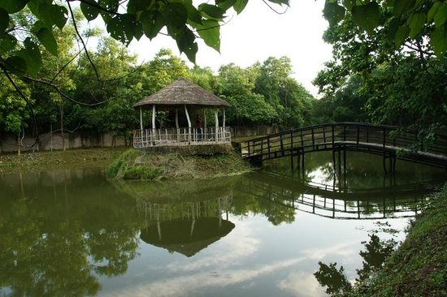
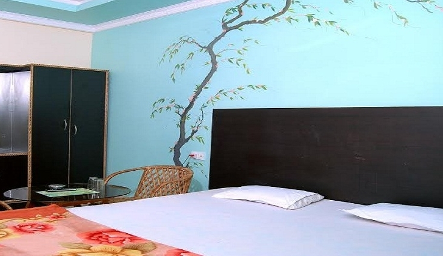
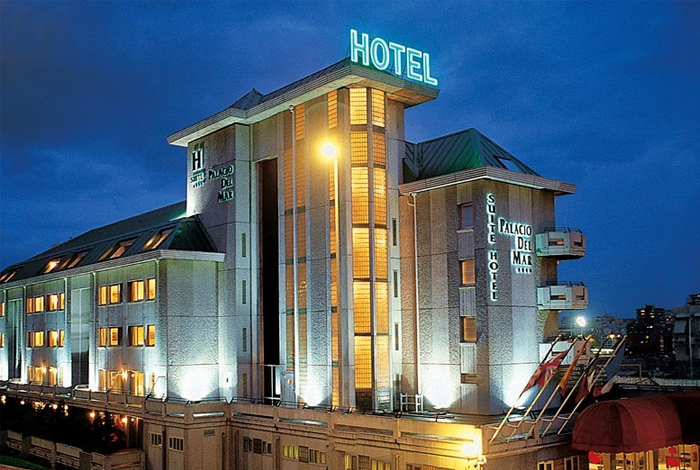

Rangamati Water Front Resort
Every People feel by heart to be with nature they find tranquility and rhythm of life. Unfortunately many of us are deprived from the touch of nature. For the sake of activities related to our business, profession and education,
we had to choose urban life where we struggle.Rangamati Waterfront Resort is a tranquil and unique resort in Gazipore 45 k.m away from Dhaka City. It allows you to unwind yourself in serene luxury, comfort and sophistication. With its own picnic spot and an endless horizon of the limitless sky, where moonlight illuminates the night,
you will find your get away to your busy life.

Meridian Hotel
Amenities:
Top amenities
Free Internet
Free Parking
Restaurant
Bar/Lounge
Breakfast included
Room Service
Room amenities:
Air Conditioning
Refrigerator in room
Minibar

Rangamati Water Front Resort
Hotel Green Castle offers accommodation in Rāngāmāti.
There is a 24-hour front desk at the property.
The hotel also offers car hire.
Rooms here are a bit of a mixed bag – the fan-only rooms are well-priced but very small, while the air-conditioned ones are very large and have balconies over the lake. All in all, fair but uninspiring.